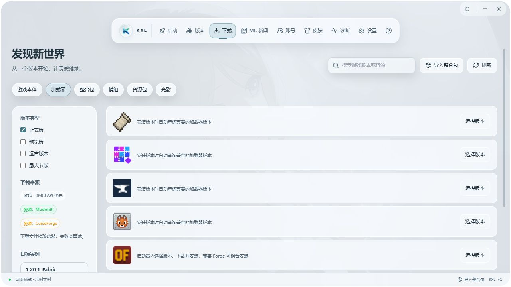
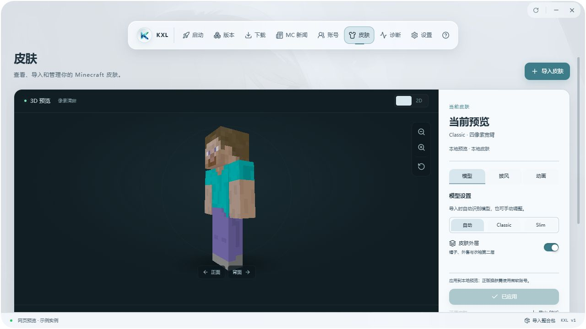

游戏与加载器
安装 Minecraft Java 版与主流加载器，也支持兼容的 Forge + OptiFine 组合。
KYNEX LAUNCHER
游戏版本、资源与角色，在一个熟悉的窗口里。
LESS FRICTION. MORE PLAY.
把常用的事情放在一起，把时间留给喜欢的世界。
安装 Minecraft Java 版与主流加载器，也支持兼容的 Forge + OptiFine 组合。
集中检索与安装游戏资源，管理模组和文件夹，让搭配与整理少一些来回。
导入喜欢的整合包，也能导出自己的搭配，为下一次冒险做好准备。
支持微软设备授权登录，以及离线角色与皮肤管理，按你的游玩方式选择。
从启动器进入服务器与存档相关页面，查看 MC 新闻，接着探索新的可能。
网易云与本地音乐陪伴游玩，支持 MP3、FLAC，以及四种播放模式。
A CLOSER LOOK
看看 Kynex 如何陪你准备下一次冒险。


YOUR NEXT ADVENTURE
准备好账户与游戏，剩下的慢慢探索。
下载 Windows 便携版，完整解压后，运行 Kynex Launcher.exe。
按界面指引登录微软账户。正版登录需要相应的游戏所有权。
安装游戏版本或导入整合包，检查配置后，开启你的方块世界。
A LITTLE SUPPORT, A LONG WAY
如果 Kynex 帮你省下了准备的时间，欢迎在爱发电支持项目。
也可以到 GitHub 留下建议，一起让下一次启动更顺手。
自愿支持，不影响功能使用。